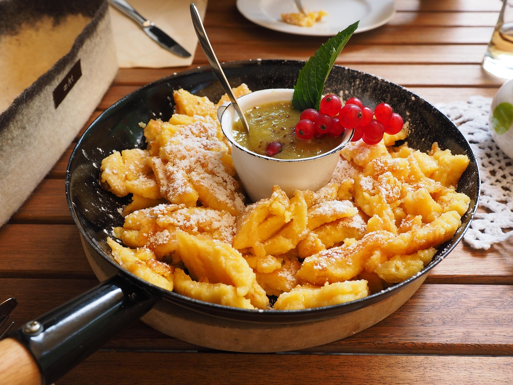

Granny's Keiserschmarrn
Who doesn't enjoy granny's delicious Kaiserschmarrn? It warms the
heart and fills you up after a hard day on the slopes. With just a
few ingredients and a few simple steps, you can dive back into the
world of your childhood!
Want to try something new?

Thermomix vs. Pan
My friend Martin said that cooking with the Thermomix is better
than cooking with a pot and pan. But is he right? Is it really
faster? And is it tasty? In my latest blog, I test the Swedish
classic Köttbullar — once in the Thermomix, once in the pan.
Let’s see who wins. 😄